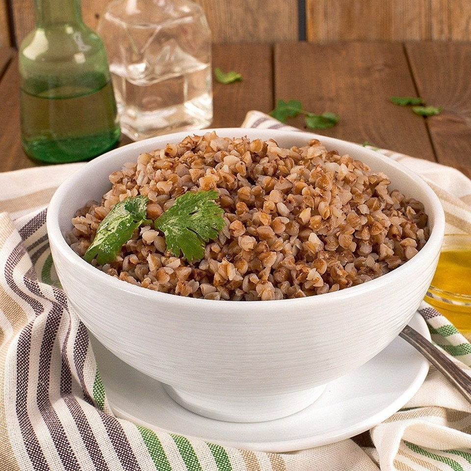
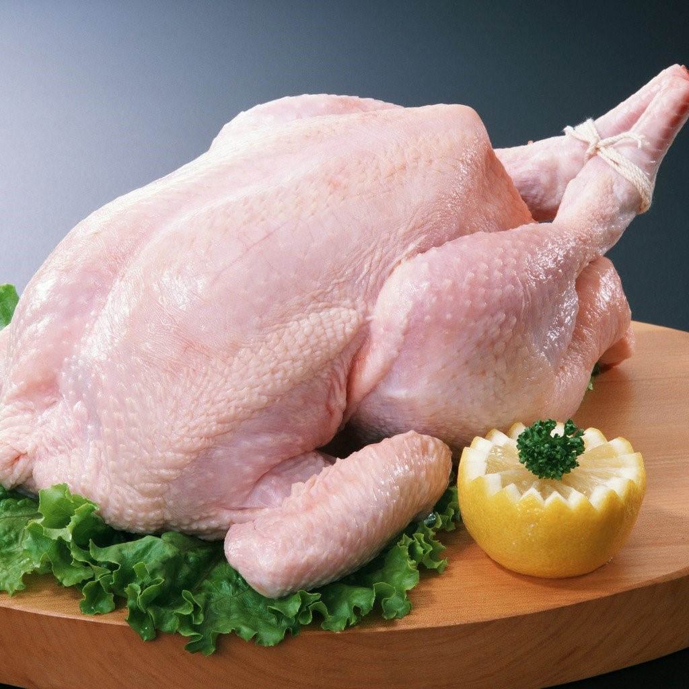
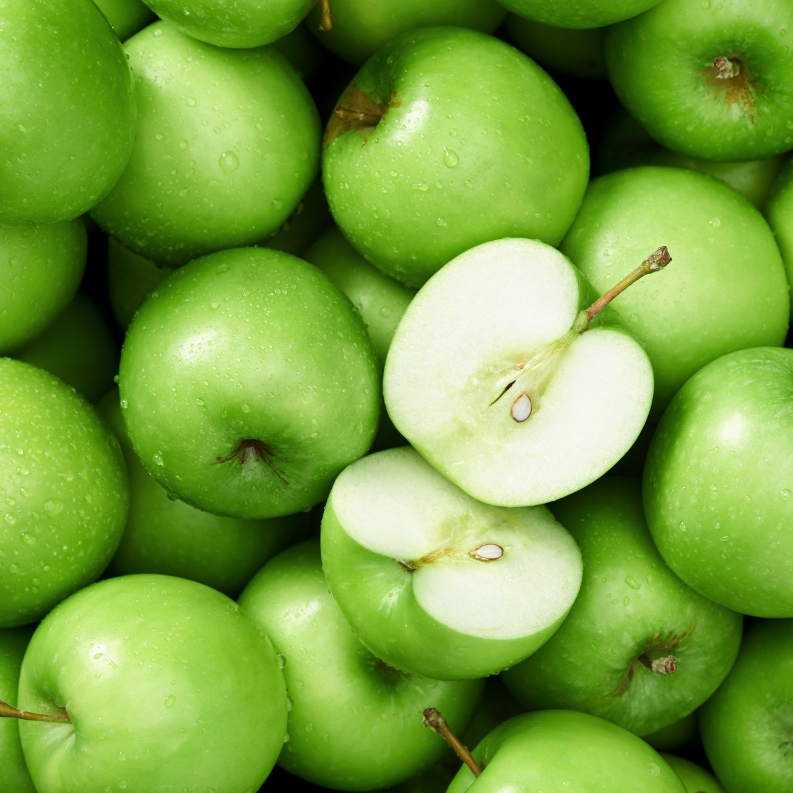
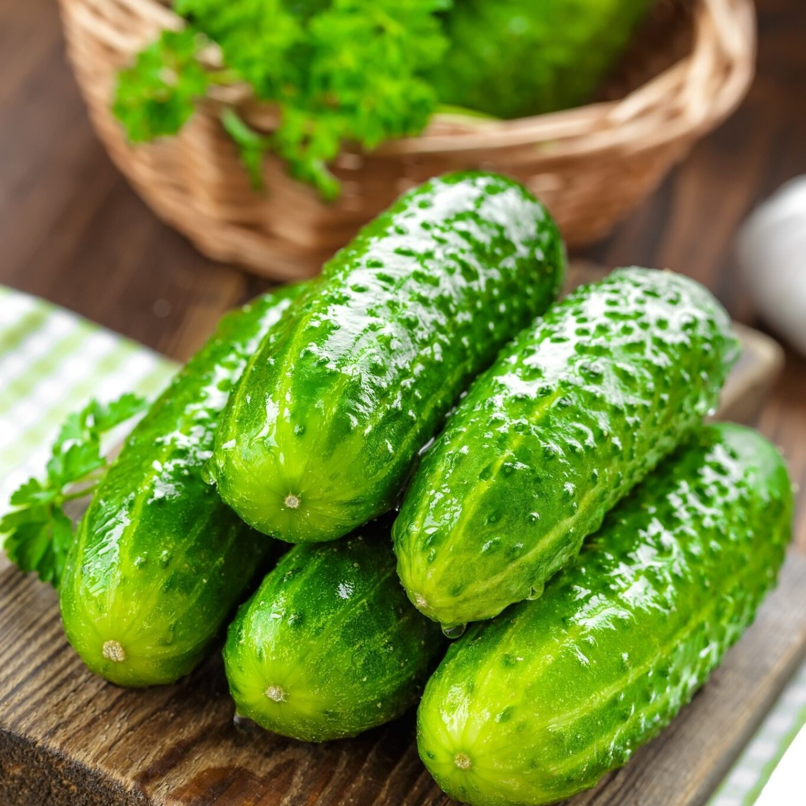
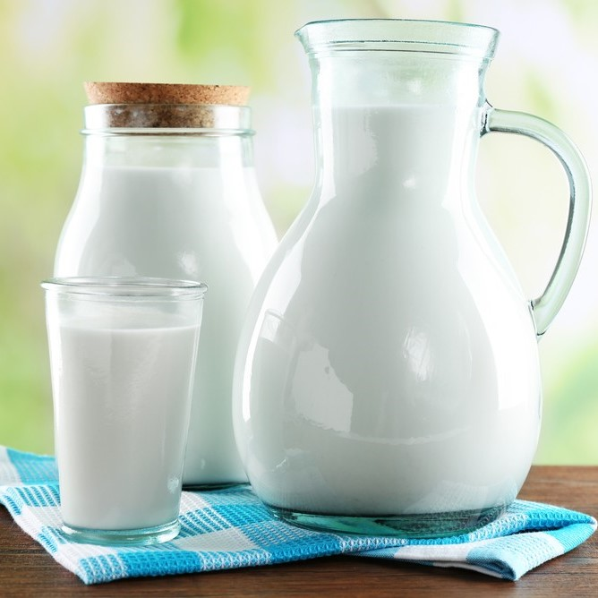
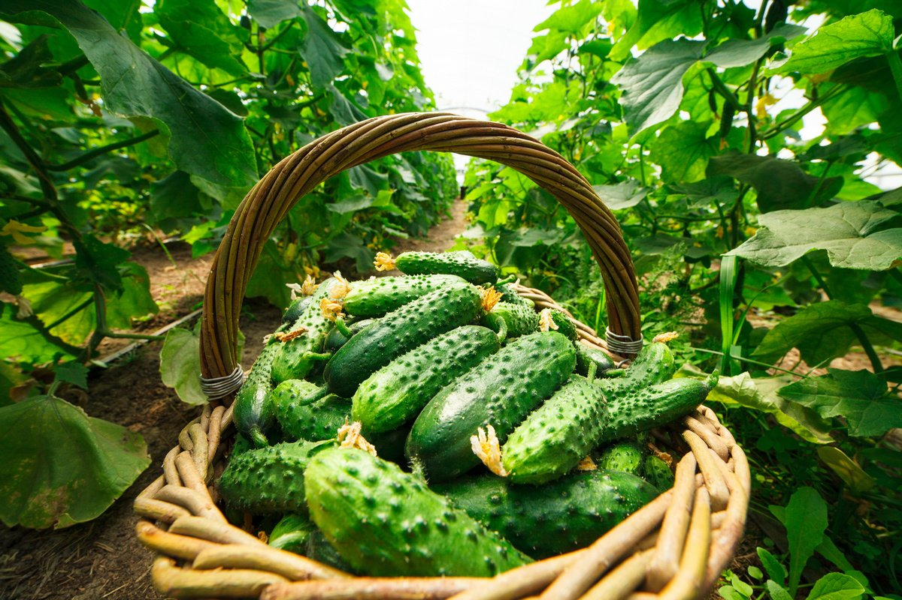
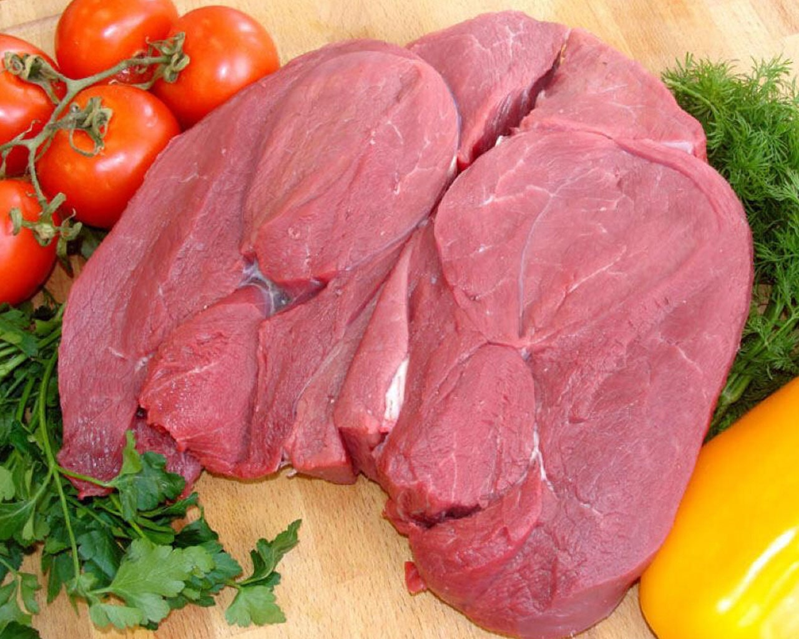
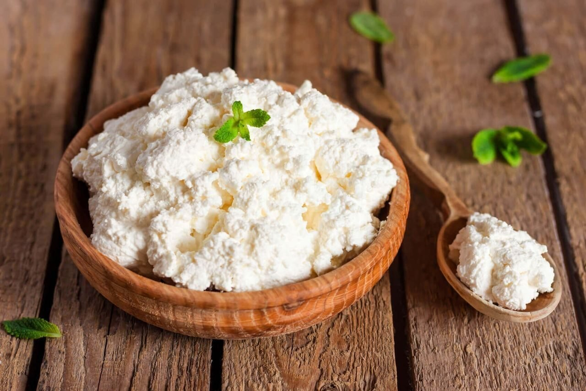

Таблица с информацией о продуктах
    
 Огурцы
В их состав входят витамины C и B. Огурец обладает мочегонным эффектом, богат антиоксидантами и помогает пищеварению. Содержит мало калорий, и его можно использовать в качестве здорового перекуса.
 Телятина
Мясо дает энергию, улучшает пищеварение и надолго насыщает организм. В нем много витаминов группы B, PP, E, также микро- и макроэлементов, аминокислот и белка. Это мясо полезно при низком гемоглобине и при больших физических нагрузках.
 Творог
Помогает не только похудеть, но и нарастить мышечную массу. Можно заменить этим продуктом высококалорийные сыры, например, рикотту. Обезжиренный творог улучшает состояние ногтей, волос и кожи. В нем много витаминов группы B, кальция, магния и железа.